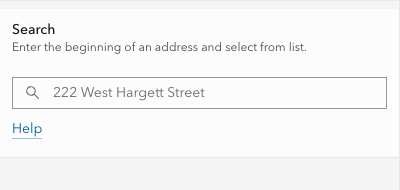
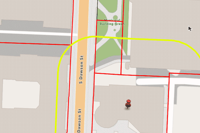

If buffer goes into a right-of-way, use the measure tool to draw a line across the ROW. This will buffer the distance of the ROW. Use this buffer as a reference to add additional properties using the Add button below. Repeat for each ROW.
If buffer goes into a right-of-way, use the measure tool to draw a line across the ROW. This will buffer the distance of the ROW. Use this buffer as a reference to add additional properties using the Add button below. Repeat for each ROW.


The City of Raleigh makes every effort to produce and publish the most current and accurate information possible. However, the maps are produced for informational purposes, and are NOT surveys. No warranties, expressed or implied, are provided for the data therein, its use, or its interpretation.
Mailing addresses obtained from Wake County, the City of Raleigh assumes no responsiblity for returned mailings.